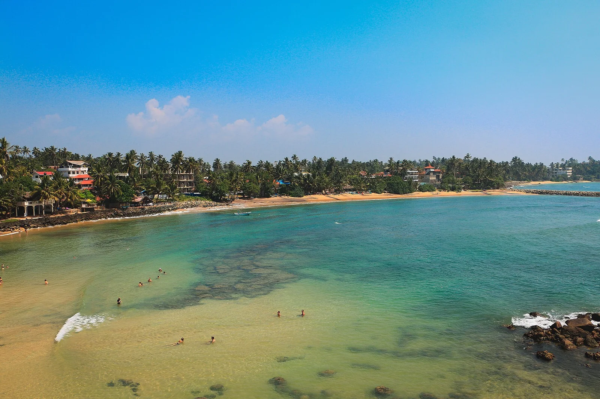

Mirissa
Province du Sud, Sri Lanka · surf, baignade

Petite baie du sud du Sri Lanka, avec une droite de récif à son extrémité ouest et une plage abritée en saison sèche. C’est aussi le principal port de départ des sorties d’observation des baleines bleues.
- Lieu
- Province du Sud, Sri Lanka
- Niveau
- Intermédiaire
- Activités
- surf, baignade
- Type d'eau
- Mer / océan
- Coordonnées
- 5.94, 80.46 (position approximative du secteur)
Dangers à connaître
- Récif et rochers peu profonds sous la vague.
- Mer forte et courants pendant la mousson de sud-ouest (mai à septembre).
Le conseil d'Ocean Buddy
Viens de novembre à avril ; pour les baleines, choisis un opérateur qui respecte les distances d’approche.
Ouvrir dans Ocean Buddy Télécharger sur l'App Store
Source : Fiche Ocean Buddy · septembre 2026 · à vérifier localement.